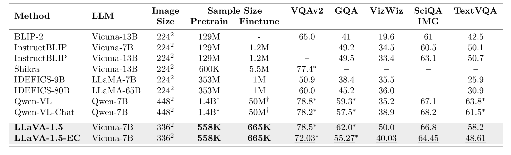
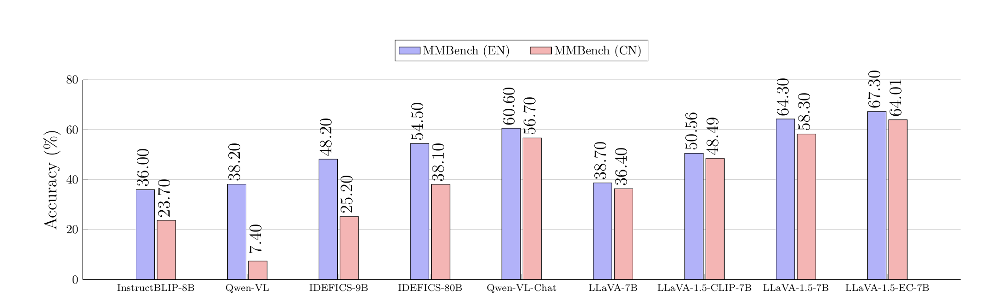

Abstract
Vision-Language Pre-trained Models (VL-PTMs) have achieved impressive performance across a wide range of tasks, but their success often hinges on access to large-scale multimodal datasets. While effective in high-resource settings, these models tend to struggle in data-scarce regimes. In this work, we investigate Emergent Communication (EC) as a mechanism to improve sample efficiency in VL-PTMs. We pre-train a Vision-Language Model (VLM) using EC tokens generated through a referential game between two artificial agents. Across three diverse cross-modal matching and reasoning benchmarks, EC pretraining yields substantial gains, improving Visual Referring Expression (VRE) accuracy by 108.6% and Visual Entailment (VE) by 69.6%.
To further validate the effectiveness of EC pretraining, we introduce LLaVA-1.5-EC, a LLaVA variant trained entirely on EC tokens. LLaVA-1.5-EC outperforms strong LVLM baselines, including BLIP-2 (13B), achieving relative gains of 104.23% on VizWiz, 34.8% on GQA, and 10.8% on VQAv2, and top performance on MMBench, a challenging instruction-following benchmark.
These results highlight the transferability and generalization capacity of EC pretraining and underscore the potential of leveraging grounded EC tokens to enhance vision-language reasoning in low-resource settings, especially in settings with limited natural language data. We discuss implications and propose avenues for future research to explore the connections between EC and VL for multimodal understanding and effective human-machine communication.
Poster
Contributions
- Novel Pretraining Framework. We introduce a vision-language pretraining framework that employs Emergent Communication (EC) between agents to generate supervision signals for pretraining. We demonstrate that EC pretraining transfers effectively to diverse downstream multimodal tasks.
- New Understanding of EC Structure. We empirically show that EC tokens encode structured and compositional semantics that generalize across tasks and modalities, positioning EC as a scalable, annotation-free alternative to natural language supervision in multimodal learning.
- Theoretical and Empirical Insights. We provide insights into the structure and transferability of emergent language for vision-language pretraining and outline future research opportunities at the intersection of EC, multimodal repre- sentation learning, and human-machine communication.
Quantitative Results on the Visual Entailment Task

Visual Entailment (VE) Accuracy. EC pretraining substantially improves VE accuracy compared to the baseline across all training sizes, and approaches NL pretraining performance as more downstream data becomes available.
Instruction Following LVLM Tasks

We compare LLaVA-1.5-EC, which is trained exclusively on EC tokens, against a range of state-of-the-art LVLMs across five benchmarks: VQAv2, GQA, VizWiz, SciQA-IMG, and TextVQA. Despite using only 558K images and no natural language supervision, LLaVA-1.5-EC achieves competitive performance, outperforming well-established models such as BLIP-2 (13B) and InstructBLIP (13B) across most datasets. For instance, relative to BLIP-2, LLaVA-1.5-EC achieves a 104.23% gain on VizWiz, 34.8% on GQA, and 10.8% on VQAv2.
LLaVA-1.5-EC also outperforms InstructBLIP, which is trained on 129M captioned image-text pairs and fine-tuned on 1.2M additional examples, highlighting the impressive representational capacity of EC pretraining. While LLaVA-1.5-EC does not on some benchmarks surpass Qwen-VL -- trained with over a billion curated image-text pairs -- LLaVA-1.5-EC achieves strong results despite having seen 2–3 orders of magnitude fewer samples and no human-written captions. For example, on VizWiz, LLaVA-1.5-EC even outperforms Qwen-VL (40.03 vs. 35.2), showing its effectiveness on visually grounded tasks.
Results on MMBench

Comparison of LLaVA-1.5-EC with SoTA Instruction-Following Models on the MM- Bench Benchmark. LLaVA-1.5-EC, pretrained using Emergent Communication tokens, surpasses all baselines, highlighting the potential of EC-based pretraining.
Qualitative Results
We conduct an in-depth qualitative analysis to uncover potential patterns in the generated Emergent Communication (EC) text. We show some interesting insights below.


BibTeX
@article{ogunleye2025ecvlm,
title={EC-VLM: Emergent Corpus Pre-training Benefits Vision Language Models},
author={Ogunleye, Makanjuola A. and Vickery, Chase and Lourentzou, Ismini},
journal={Transactions on Machine Learning Research (TMLR)},
year={2025}
}